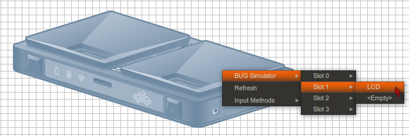
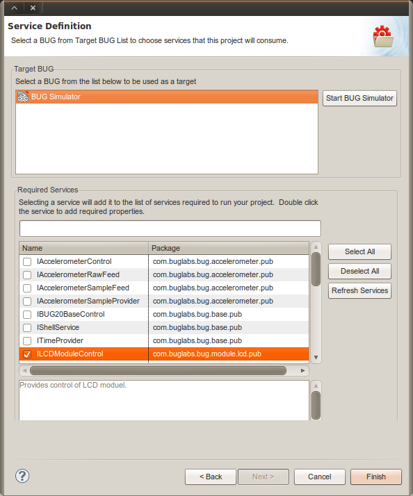
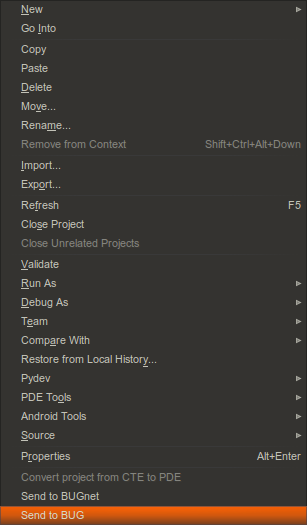

Using Modules in BUG Simulator
Contents |
Introduction
The modules that you add in BUG Simulator are important, since they define the services that are available when creating applications AND when running them. Basically, that means:
- When you create a new BUG project, it is a good idea to add the modules in BUG Simulator first.
- When running and testing an app in BUG Simulator, your app will wait until you add the modules it expects to use.
Adding a Module
The next step is to plug in some hardware. In this example, we will use the LCD module. To plug in the virtual LCD, right click on the BUGbase image and navigate to the menu item: BUG Simulator > Slot 1 > LCD

Using the BUG Simulator When Creating a New BUG Project
When you are creating a new BUG project to run on the BUG Simulator, only the currently installed modules are listed in the Service Definition window. If you added the LCD module in BUG Simulator, then you will see the ILCDModuleControl in the list of available services like in the example below. By adding the modules services in the Service Definition window, you get the benefit of the SDK writing some of the bootstrap classes and code for calling each service.

Adding Services Manually in Code
If you did not add the LCD module or other module(s) that you need or if you used the Start BUG Simulator button in this window, then these modules will not appear in this list. However, this does not prevent you from manually adding the services you require.
Using the BUG Simulator When Testing an App
When you are building and testing apps in BUG Simulator, you often have to start or restart the BUG Simulator and use the Send to BUG command to deploy the app. Your code that depends on hardware modules will only execute when the modules are present. So you will frequently need to perform the following steps to run and test your app:
- If BUG Simulator is already running, you may need to terminate the running instance first. To do this, look for the Console view in Eclipse and click on the red Terminate button . (Note: You can often redeploy an app into a running BUG Simulator without stopping and starting the simulator)
- Click on the Launch BUG Simulator button
- Right-click on your BUG project in Eclipse and select Send to BUG

- Open My BUGs view and open the BUG Simulator window by double-clicking on the BUG Simulator listed in My BUGs.
- Right-click on the BUG base and add the required modules (as shown above)